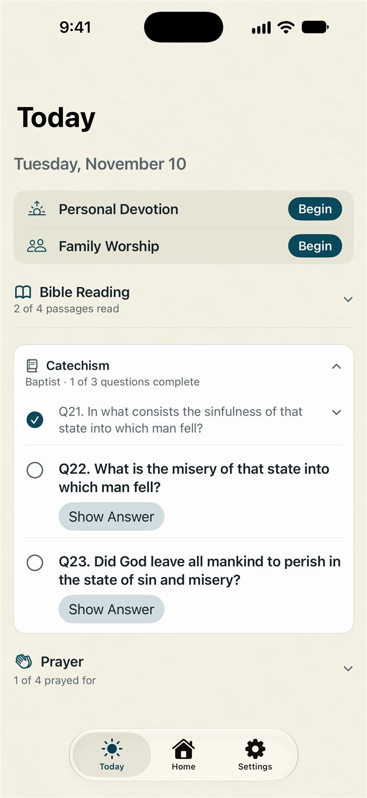
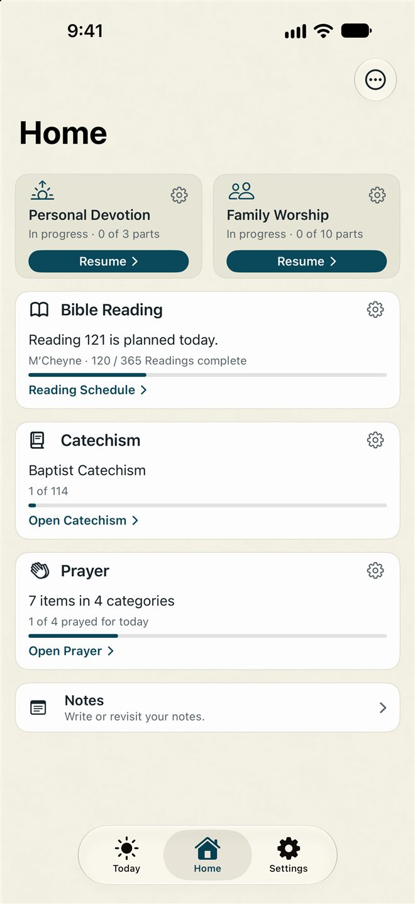
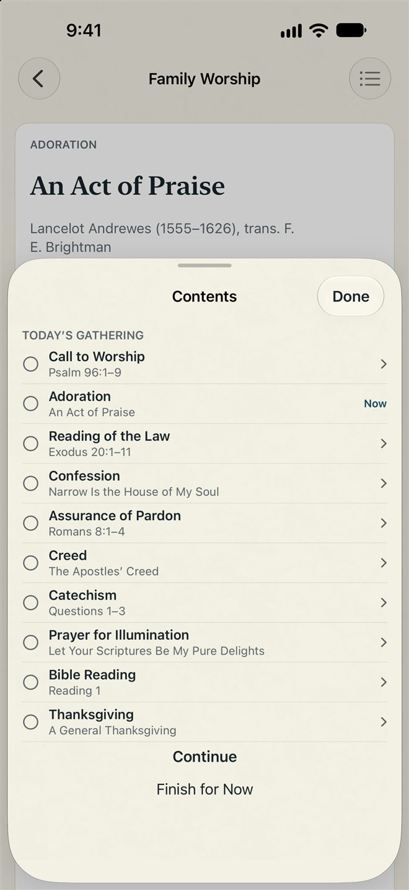
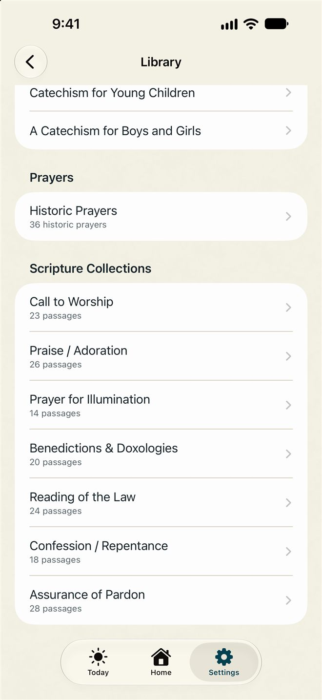

Personal Devotion
Begin each day with Scripture, prayer and catechism, led from a rhythm you set. Follow M’Cheyne’s 365-reading plan or your own.
For iPhone
Redevotion is a quiet companion for Scripture reading, prayer, catechism, and personal and family worship.
Simple, thoughtful and private. Everything stays on your device.


Begin each day with Scripture, prayer and catechism, led from a rhythm you set. Follow M’Cheyne’s 365-reading plan or your own.

Gather your household around a simple order of worship, from call to worship through confession, creed, catechism and prayer.

Read the Westminster and Second London Baptist Confessions, the ecumenical creeds, catechisms and historic prayers, offline.
Your devotional life stays on your iPhone. No account, no ads, no tracking. Export a backup file whenever you like.
Also: a prayer list with a gentle daily rotation, Scripture and catechism memory, and Scripture text in seven translations.